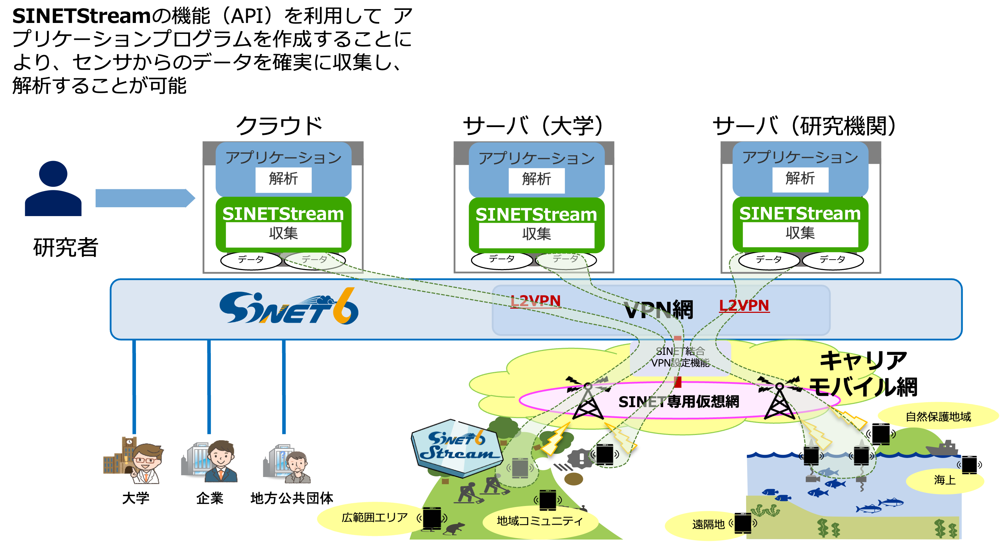

Home
News
お知らせ 2024-03-29 SINETStreamの1.9版を公開いたしました。
お知らせ 2023-05-30 SINETStreamの1.8版を公開いたしました。
お知らせ 2022-09-22 SINETStreamの1.7版を公開いたしました。
お知らせ 2022-04-27 SINETStreamデモパッケージ最新版公開いたしました。
お知らせ 2021-12-23 SINETStreamの1.6版を公開いたしました。
お知らせ 2021-03-24 SINETStreamの1.5版を公開いたしました。
お知らせ 2020-10-08 SINETStreamの1.4版を公開いたしました。
お知らせ 2020-10-07 SINETStreamのgithubのデフォルトブランチがmasterからmainに変わりました。
お知らせ 2020-07-31 SINETStreamの1.3版を公開いたしました。
お知らせ 2020-06-09 SINETStreamの1.2版を公開いたしました。
SINETStreamとは
環境測定、生体観測、IoTなど、広域に分散したデータを活用する研究では、広域ネットワークを介して、センサー等から取得されるデータを欠損なく確実に収集し、解析に用いることが求められます。 しかし、データの収集や解析を行いたい研究者にとって、広域ネットワークを介してデータを収集・解析するプログラムを作成することは、ネットワークに関する高度な知識やプログラミングスキルが必要とされ、容易ではありません。 SINETStreamは、広域ネットワークを介してデータを欠損なく確実に収集・解析するための機能を提供するソフトウェアパッケージです。 具体的には
- センサー等から収集されるデータをクラウドや大学などに設置されたサーバへ書き込む
- サーバに収集されたデータを解析プログラムに読み込む
といった機能を提供します。 研究者は、SINETStreamが提供するAPIを利用すると、広域ネットワークを介したデータの収集・解析を行うためのプログラムを容易に開発することができます。 また、研究に用いられるデータには機微な情報が含まれる場合もありますが、SINETStreamには通信やデータの暗号化、センサー等のデバイスの認証を行う機能も含んでいるため、安全な広域データ収集を実現できます。

SINETStreamの事例紹介
SINETStreamの利用
SINETStreamのご利用にあたり、ユーザ登録をお願いしております。 ユーザ用メーリングリストからSINETStreamに関するリリース、バグフィックス情報、 FAQのご紹介等の情報提供をさせていただきます。 下記よりご登録お願いいたします。
チュートリアル
SINETStreamを利用したライブデモ
関連情報
- SINETStream https://sinetstream.net/
- A. Takefusa, J. Sun, I. Fujiwara, H. Yoshida, K. Aida and C. Pu,
"SINETStream: Enabling Research IoT Applications with Portability, Security and Performance Requirements," 2021 IEEE 45th Annual Computers, Software, and Applications Conference (COMPSAC), pp. 482-492, 2021. doi: 10.1109/COMPSAC51774.2021.00073. - SINETStream外部発表
- 国立情報学研究所 クラウド支援室
- モバイルSINET
プライバシーポリシー
本サイトでは、より使いやすいウェブページへの改善の参考とするため、利用者のアクセス状況（アクセス日時、端末情報、ホスト名など）をアクセスログ（Google Analyticsほか）として記録しています。 これは利用者を特定できる情報ではありません。 またこれらのデータを法令に基づく場合を除き、外部の第三者に提供することはありません。